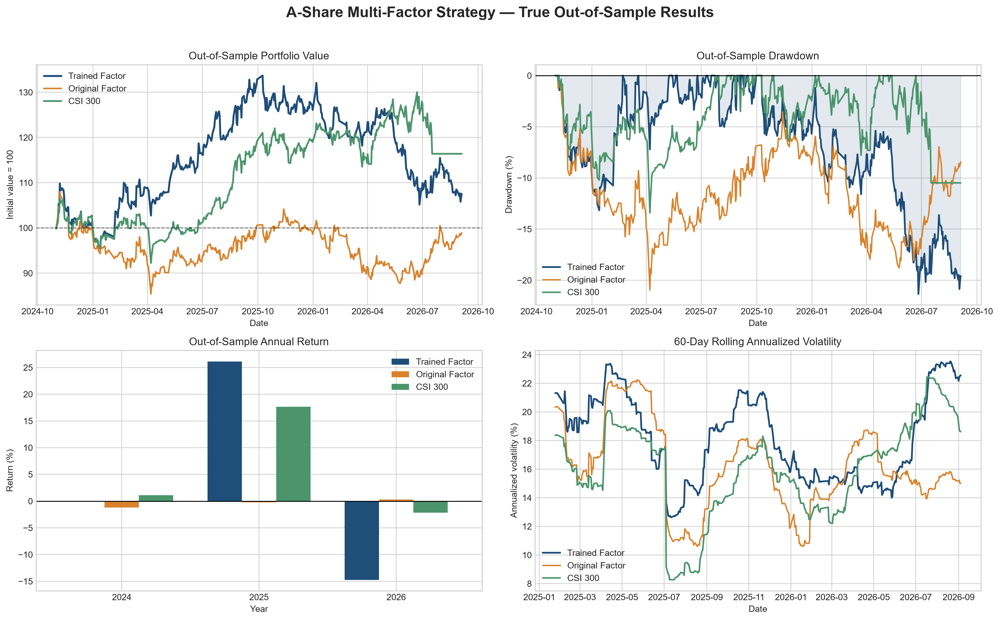

The trained multi-factor model returned 7.53% during the true out-of-sample period. The original model returned -1.08%, while the CSI 300 returned 16.40%.
Training improved the original strategy by 8.61 percentage points. However, the trained model produced an excess return of -8.87 percentage points relative to the benchmark.
Training improved performance relative to the original model. The trained factor model underperformed the CSI 300.
| Method | Final Value | Total Return (%) | Annual Return (%) | Annual Volatility (%) | Sharpe Ratio | Maximum Drawdown (%) | Cost (%) |
|---|---|---|---|---|---|---|---|
| Trained Factor | 107530.82 | 7.53 | 4.15 | 18.87 | 0.20 | -21.34 | 1.46 |
| Original Factor | 98920.29 | -1.08 | -0.61 | 16.60 | -0.07 | -20.95 | 1.28 |
| CSI 300 Benchmark | 116398.19 | 16.40 | 8.88 | 16.33 | 0.48 | -13.42 | 0.00 |

| Period | Months | Mean IC | IC Standard Deviation | IC IR | Positive IC Rate (%) | t-Statistic |
|---|---|---|---|---|---|---|
| Testing | 21 | 0.03 | 0.39 | 0.08 | 61.90 | 0.37 |
| Training | 48 | 0.09 | 0.35 | 0.26 | 54.17 | 1.80 |
| Factor | Training Mean IC | Testing Mean IC | Direction | Weight (%) | Stable Direction |
|---|---|---|---|---|---|
| 20-Day Momentum | 0.03 | -0.03 | 1 | 15.63 | 0 |
| 60-Day Momentum | -0.04 | -0.18 | -1 | 17.45 | 1 |
| 5-Day Reversal | -0.04 | 0.04 | -1 | 20.32 | 0 |
| Low Volatility | -0.07 | 0.11 | -1 | 31.53 | 0 |
| MA Trend | -0.03 | -0.16 | -1 | 12.96 | 1 |
| Volume Ratio | 0.00 | -0.00 | 1 | 2.10 | 0 |
| Method | 95% VaR (%) | 95% CVaR (%) | Worst Day (%) | Maximum Drawdown (%) | Maximum Loss Streak | Monthly Win Rate (%) |
|---|---|---|---|---|---|---|
| Trained Factor | 1.75 | 2.47 | -5.17 | -21.34 | 10 | 52.17 |
| Original Factor | 1.41 | 2.26 | -6.32 | -20.95 | 10 | 43.48 |
| CSI 300 Benchmark | 1.71 | 2.55 | -7.05 | -13.42 | 5 | 60.87 |
| Method | Rebalances | Total Turnover (%) | Average Monthly Turnover (%) | Annualised Turnover (%) |
|---|---|---|---|---|
| Original Factor | 21 | 920.0 | 43.81 | 525.71 |
| Trained Factor | 21 | 1040.0 | 49.52 | 594.29 |
| CSI 300 Benchmark | 0 | 0.0 | 0.00 | 0.00 |
Latest available ranking date: 2026-09-04
| Rank | Symbol | Company | Composite Score |
|---|---|---|---|
| 1 | 000001.SZ | Ping An Bank | 0.60 |
| 2 | 600036.SS | China Merchants Bank | 0.54 |
| 3 | 000333.SZ | Midea Group | 0.39 |
| 4 | 000651.SZ | Gree Electric | 0.33 |
| 5 | 600900.SS | Yangtze Power | 0.26 |
The trained factor specification improved upon the original model but did not outperform the CSI 300 during the out-of-sample period.
Its lower Sharpe ratio, larger drawdown and high annualised turnover indicate that the current factor signal is not sufficiently strong for live deployment.
The strategy should be treated as a quantitative research prototype. Future work should expand the stock universe, include fundamental factors, neutralise sector exposure and apply walk-forward validation.